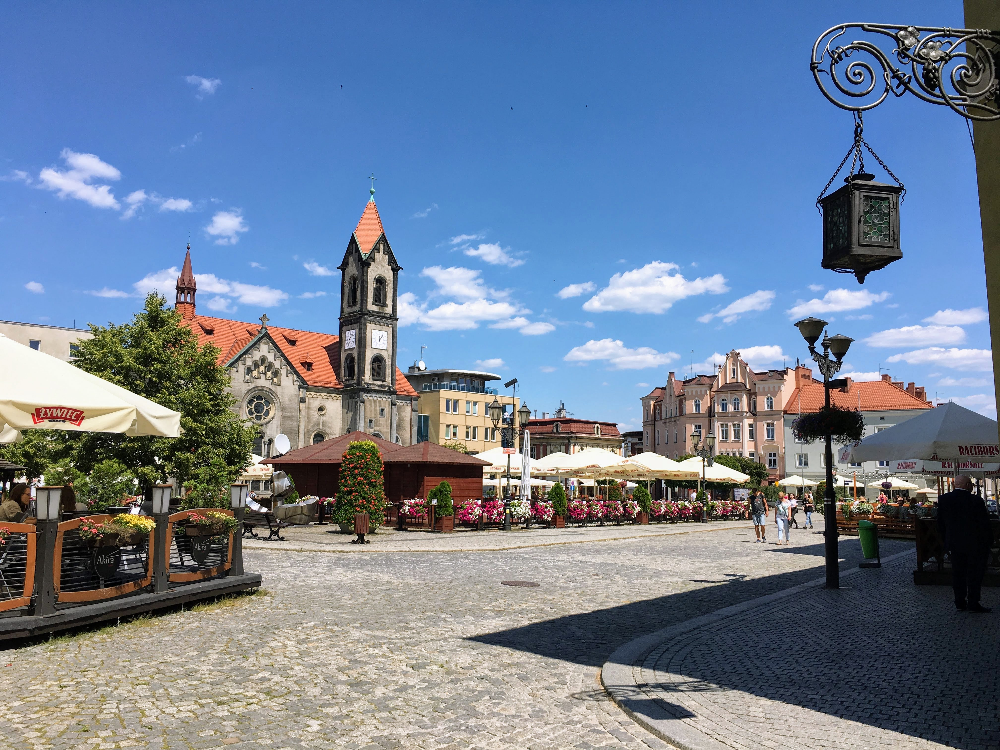
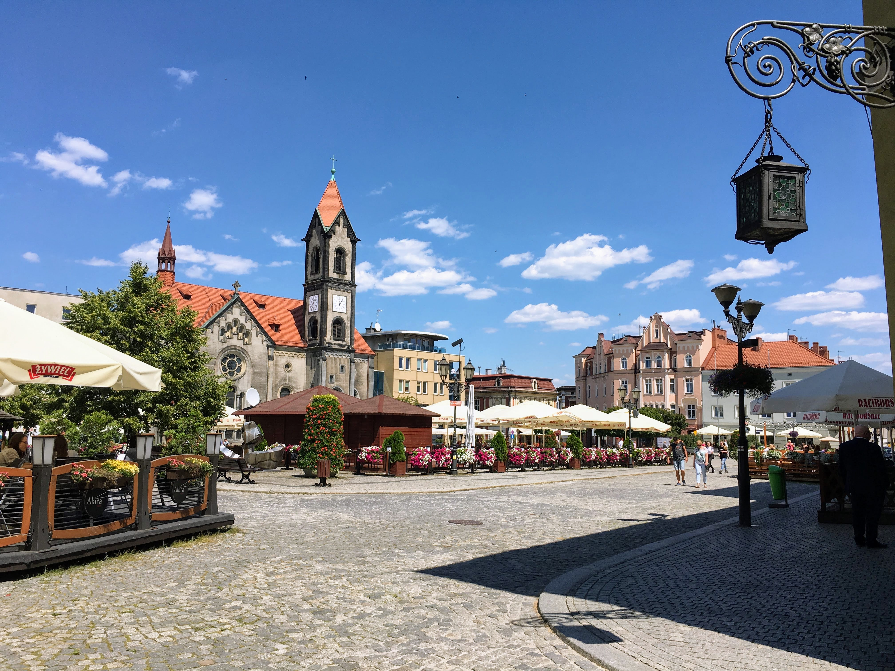

Welcome!
Is a town in Silesia, southern Poland, located in the Silesian Highlands near Katowice.
On the south it borders the Upper Silesian Metropolitan Union, a megalopolis, the greater Silesian metropolitan area populated by about 5,294,000 people.
As of 1999, it is part of Silesian Voivodeship, previously Katowice Voivodeship.
The name of Tarnowskie Góry is derived from Tarnowice, name of a local village and word góry which in Old Polish meant "mines".
Atractions
 

Historical Mine Of Silver Ores, a UNESCO World Heritage Site.
Town Square, adorned by string of old romantic Renaissance arcade buildings, a 17th-century Protestant church, the building of the town's first pharmacy and crowned by an impressive town hall; it is spotted with shops, bars, restaurants etc.
History
The earliest settlements around Tarnowskie Góry date back to over 20 thousand years BC. Traces of the Upper Paleolithic inhabitants were found in village of Rybna, within present-day town borders.
During the bronze age people lived along the banks of river Stoła, earlier this river was known as "Rybna", their tools, jewelry and weapons were excavated here, dating from between the 8th and 5th centuries BC.